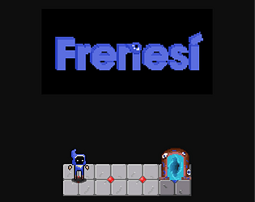

Frenesi
Released on July 12, 2020.
Created for Game Makers Toolkit Game Jam 2020. The theme was out of control. This game was developed by me, Jessica Dominguez (designer), and Juan Franco (UX and scripting). We decided to take the "out of control" part and force it into other characters. As mentioned in the description of Mama, so fast I grew fond of pixel art and puzzle games, and given the restrictive nature of game jams and the reduced possibility of bugs in puzzle games, we thought it was a no-brainer.
My Contributions:
- Project Lead: Once again, I assembled a group of friends interested in creating a game for the jam and pointed everyone in a centralized direction so that we could finish on time.
- Movement programming: I improved on Mama So Fast's movement system to better handle movement animations.
- Grid-level creation: system using Unity's experimental tile system (it has not yet been incorporated into Unity's core)
- Enemy AI and enemy control system programming
My learnings and things to improve:
- usage of Unity's grid system (which I keep using in most of my 2D projects). It allows for a really fast prototyping stage, and it is really powerful.
- The importance of audio was really relevant here. I think it makes a huge difference that the game has nothing, and it's so much worse because of it.
- Adding more enemies will improve variance and increase challenges.
- Improving enemy AI since time restrictions only allowed me to do very basic AI scripting